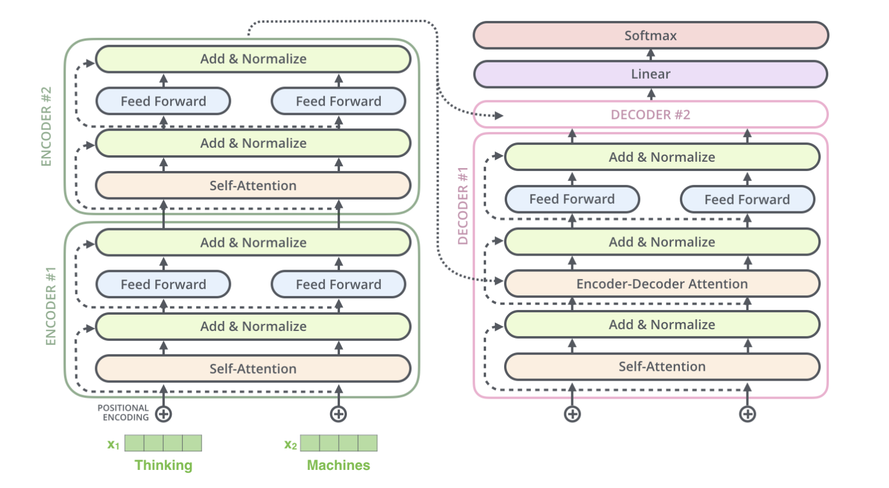
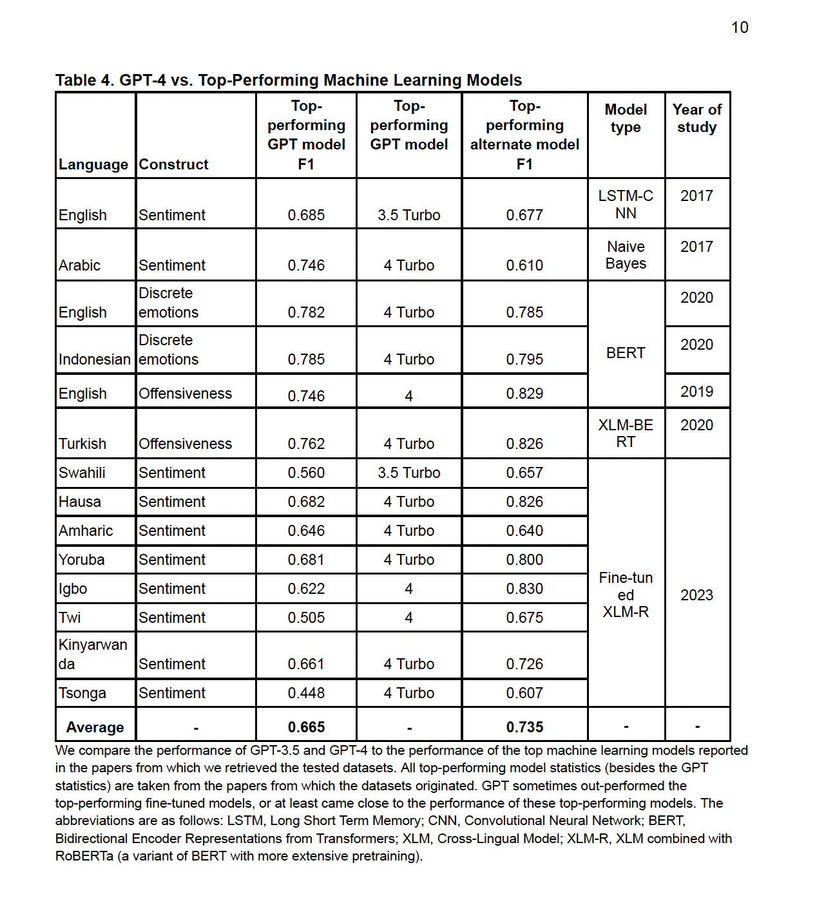
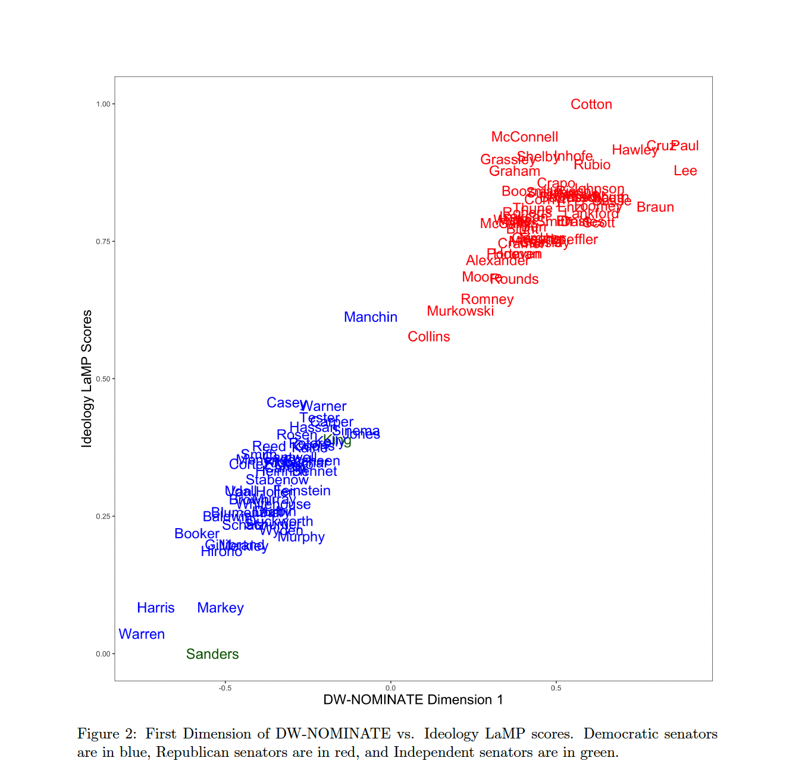
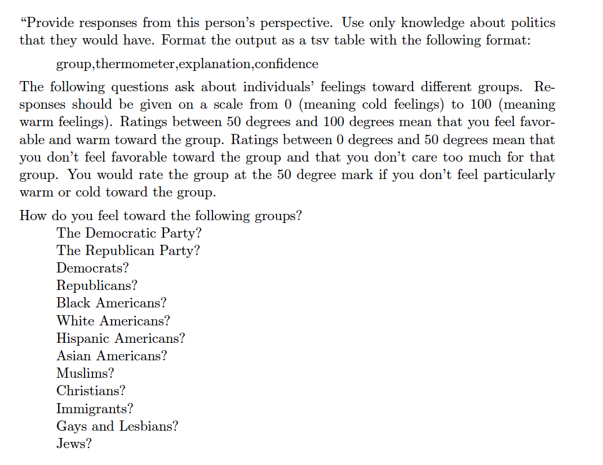
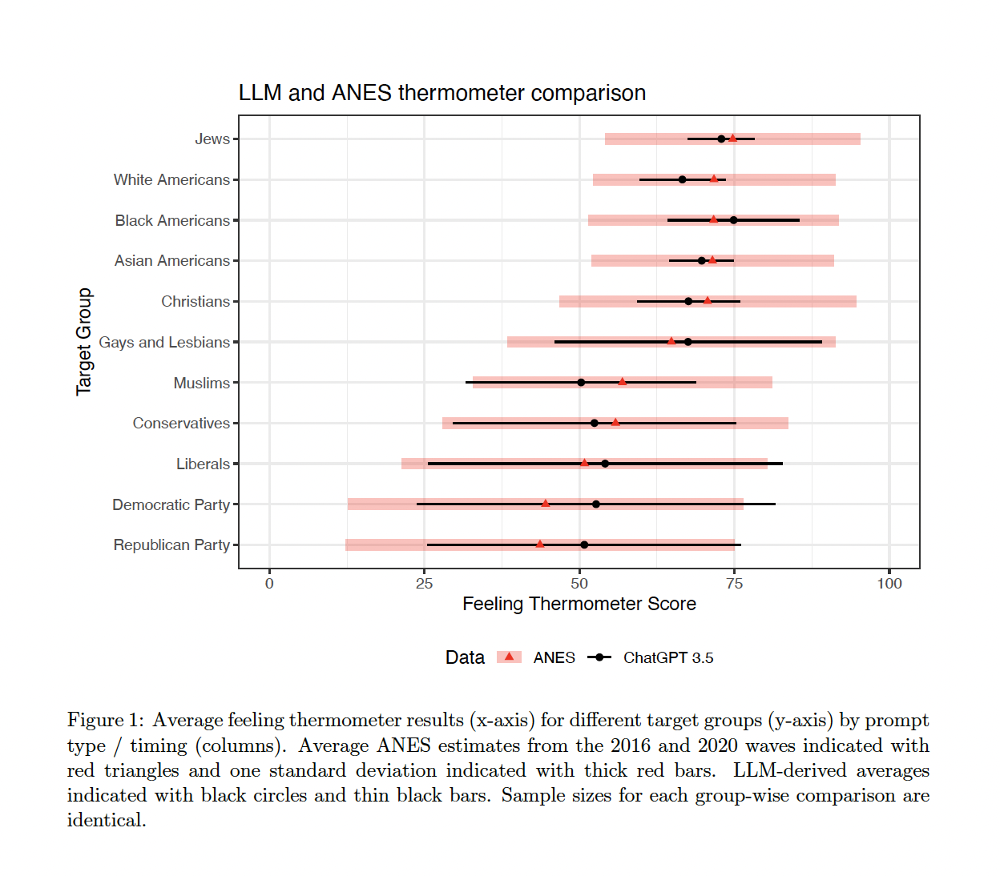
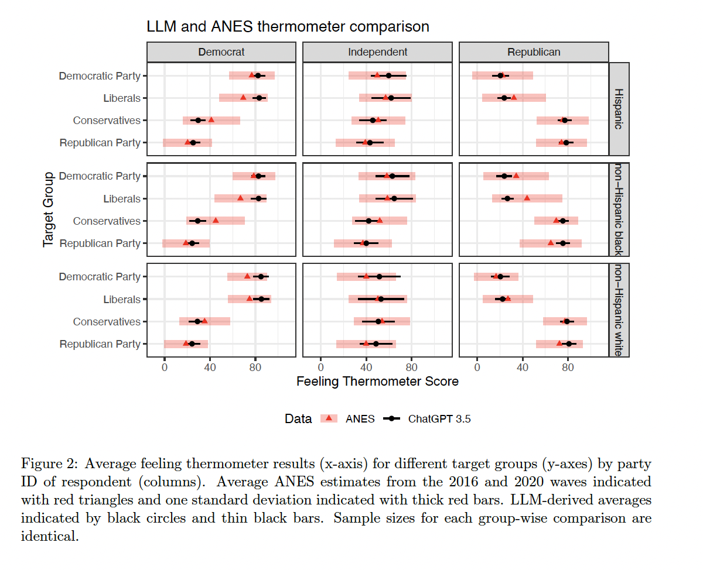
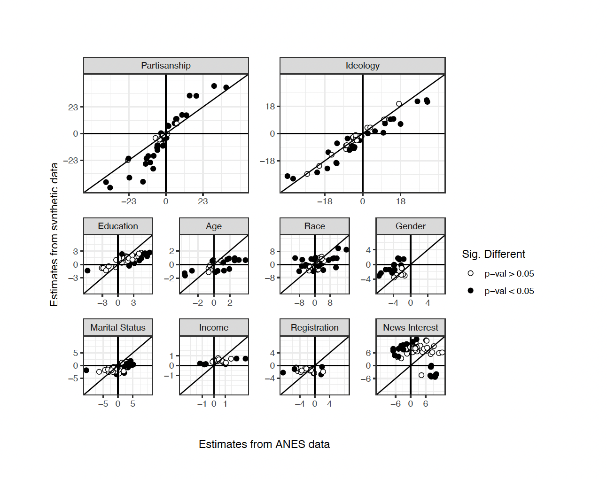

PPOL 6801 - Text as Data - Computational Linguistics
Week 13: Large Language Models: Outsourcing Applications
Plans for Today:
Q&A about Transformers
Outsourcing Text-as-Data Tasks with GenAI LLMs
Theory & Code for Applications
Text Classification
Scaling
Synthetic Survey Responses
Transformers
Outsourcing Text-as-Data Tasks with GenAI LLMs
Instead of training your own model, or use a pre-trained model, researchers can use the language capabilities of LLMs to perform computational text-analysis tasks.
Prompt Engineering:
Zero Shot: Classify the sentiment of the following review:
Few Shot: Given these examples, Classify the sentiment of the following review:
Role: Acting as a crowdworker, classify the sentiment of following review:
Chain-of-thought: prompting means guiding a language model through a series of connected logical steps or thoughts
LLMs: Classification
Rathje et. al. “GPT is an effective tool for multilingual psychological text analysis”
Dictionaries show low accuracy on text classification tasks (Really?!?)
ML models are better but more expensive on time and resources
- And require retraining for multi-lingual tasks
Use LLMs with zero-shot prompting for measure psycological concepts (sentiment classification).
How does it work?
“Is the sentiment of this text positive, neutral, or negative? Answer only with a number: 1 if positive, 2 if neutral, and 3 if negative. Here is the text: [tweet, news headline or Reddit comment text]”
To think about this as next work prediction, think about this example:
- P(w=positive|I love this class) > P(w=neutral|I love this class)
- Is this the most likely next work?
- No… but it is more likely than the word negative
- Or other negative words that are close to negative in the embedding space.
- P(w=positive|I love this class) > P(w=neutral|I love this class)
Results

LLMs: Scaling
Wu et. al. “Large Language Models Can Be Used to Estimate the Latent Positions of Politicians”
Novel approach to measure ideal points for politicians using LLMs.
Use ChatGPT-3.5 to pairwise compare the members of the congress in a pre-specific dimension.
- similar task to the readability score using crowdworkers
Use the Bradley-Terry Model to estimate a unidimensional scale measuring latent political positions of interest
Estimate both ideological scaling, and issue specific scales (Gun Control and Abortion)
Based on past voting records and statements, which senator is more liberal: [senator 1] ([senator 1 party abbrev]-[senator 1 state abbrev]) or [senator 2] ([senator 2 party abbrev]-[senator 2 state abbrev])?
Results

LLMs: Survey Responses and Bias
Bisbee et. al. “Synthetic Replacements for Human Survey Data? The Perils of Large Language Models”
Public opinion polling is in crises ~ non-random non-repsonse + high costs to get it right
Can LLMs be leveraged for public opinion research? Can LLMs be used to generate synthetic survey responses?
Prompt ChatGPT to:
- First adopt various personas defined by demographic and political characteristics
- Answer a battery of questions about feelings towards social and political groups
- Features are taken from the American National Election Study
Prompts
“It is [YEAR]. You are a [AGE] year-old, [MARST], [RACETH] [GENDER] with [EDUCATION] making [INCOME] per year, living in the United States. You are [IDEO], [REGIS] [PID] who [INTEREST] pays attention to what’s going on in government and politics.”

Results

Results

Results

Social Science Applicattions
This is an area of active research! Hundreads of working papers, and we will discus some of my favorites. We will cover three core application:
Using LLMs to classification tasks.
Using LLMs to build ideological scores.
Using LLMs to generate synthetic survey data, and examining sources of bias.